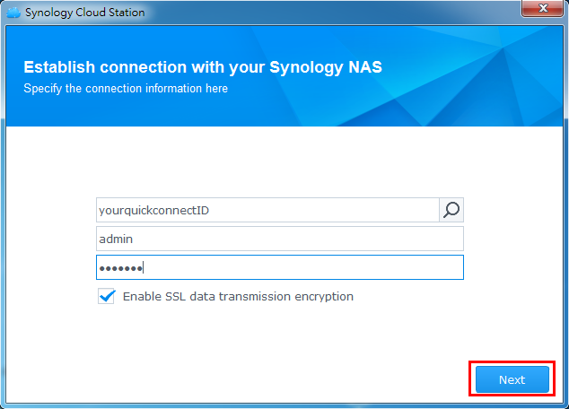
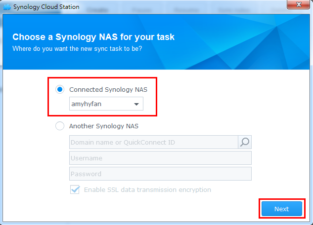
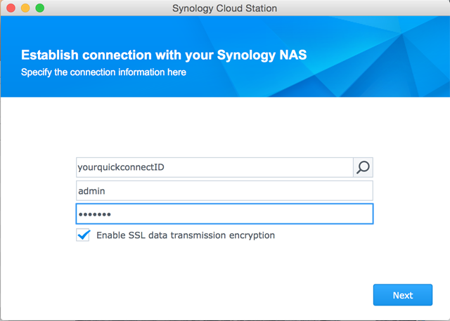

Обзор
Cloud Station – современная кроссплатформенная программа синхронизации – может также использоваться как гибкий инструмент резервирования пользовательских данных. Использование Cloud Station в таком качестве дает ряд преимуществ. Прежде всего, репликация данных в режиме реального времени улучшает показатели целевых точек восстановления и уменьшает период времени, в течение которого в результате чрезвычайной ситуации данные компьютера могут быть потеряны без возможности восстановления. Cloud Station не только осуществляет мгновенное резервирование данных, но и существенно снижает использование пропускной способности за единицу времени по сравнению с традиционным методом резервирования. На клиентском компьютере в папке для резервирования можно выбрать файлы, которые резервировать не нужно, отфильтровав их по размеру или типу файла. Кроме того, Cloud Station может хранить до 32 версий файла и восстанавливать их с NAS-сервера на компьютер.
1. Настройка Cloud Station на NAS Synology
- Выполните вход в DSM с учетной записью пользователя, принадлежащего группе administrator.
- Запустите Cloud Station.
- Если вы не активировали функцию главной папки пользователя, вам будет предложено это сделать. Нажмите OK.
- Вы будете перенаправлены на страницу настроек пользователя. Активируйте homes пользователей и нажмите Применить.
- Вернитесь в Cloud Station, вам будет предложено активировать приложение. Нажмите Да.
- Выберите Права доступа и укажите пользователей, которые будут иметь доступ к Cloud Station. Нажмите Сохранить.
- Настройте папку общего доступа на NAS-устройстве Synology для целей резервирования. Выберите Панель управления > Папка общего доступа и нажмите Создать.
- Задайте имя папки и заполните соответствующие поля. Нажмите OK. Например, назовем папку Резервирование.
- На вкладке Разрешения укажите пользователей, которые будут иметь право доступа к папке. Например, зададим пользователю admin права на чтение/запись. Нажмите OK.
- Выберите Cloud Station > Настройки > Общий доступ, выберите папку Резервирование и нажмите Включить.


2. Настройка Cloud Station на ПК под управлением Windows
Для настройки Cloud Station на ПК или Mac выполните следующие действия
2.1 Для ПК
- Выберите Cloud Station > Обзор и нажмите кнопку Загрузить.
- Нажмите кнопку, чтобы загрузить Cloud Station для ПК под управлением Windows. (Вы также можете загрузить Cloud Station из Центра загрузок Synology.)
- Запустите на компьютере средство установки и следуйте инструкциям по установке Cloud Station.
- После установки запустите Cloud Station на компьютере. Нажмите Запустить сейчас.
- Введите адрес NAS-устройства Synology, на котором установлено приложение Cloud Station (или QuickConnect ID), имя пользователя и пароль. (Можно также нажать на значок поиска справа, и Cloud Station автоматически начнет искать другие NAS Synology в вашей локальной сети.) Нажмите Далее. 
- Укажите параметры настройки задачи (здесь мы выберем Расширенная настройка, так как настраиваем специальную папку для резервирования). Нажмите Далее.
- Выберите папку на компьютере, чтобы синхронизировать ее с папкой "Резервирование", созданной на NAS-устройстве Synology. Нажмите Далее.
- Нажмите Готово для завершения настройки.


Создание новой задачи:
- Выберите Cloud Station > Настройки и включите папку общего доступа для новой задачи. В нашем примере это папка photo. Убедитесь, что вы имеете права на чтение/запись для папки photo.
- В программе Cloud Station на своем компьютере нажмите Создать.
- Выберите NAS Synology для новой задачи. Здесь мы выберем Подключенное NAS-устройство Synology, так как создаем новую задачу для того же NAS-устройства Synology. Нажмите Далее. 
- Нажмите Расширенная настройка и следуйте инструкциям мастера для завершения настройки.


2.2 Для Mac
- Выберите Cloud Station > Обзор и нажмите кнопку Загрузить.
- Нажмите кнопку, чтобы загрузить Cloud Station для Mac. (Вы также можете загрузить Cloud Station из Центра загрузок Synology.)
- Запустите на компьютере средство установки и следуйте инструкциям по установке Cloud Station.
- После установки запустите Cloud Station на компьютере. Нажмите Запустить сейчас.
- Введите адрес NAS-устройства Synology, на котором установлено приложение Cloud Station (или QuickConnect ID), имя пользователя и пароль. (Можно также нажать на значок поиска справа, и Cloud Station автоматически начнет искать другие NAS Synology в вашей локальной сети.) Нажмите Далее. 
- Укажите параметры настройки задачи (здесь мы выберем Расширенная настройка, так как настраиваем специальную папку для резервирования). Нажмите Далее.
- Выберите папку на компьютере, чтобы синхронизировать ее с папкой "Резервирование", созданной на NAS-устройстве Synology. Нажмите Далее.
- Нажмите Готово для завершения настройки.


Создание новой задачи:
- Выберите Cloud Station > Настройки и включите папку общего доступа для новой задачи. В нашем примере это папка photo. Убедитесь, что вы имеете права на чтение/запись для папки photo.
- В программе Cloud Station на своем компьютере нажмите Создать.
- Выберите NAS Synology для новой задачи. Здесь мы выберем Подключенное NAS-устройство Synology, так как создаем новую задачу для того же NAS-устройства Synology. Нажмите Далее.
- Нажмите Расширенная настройка и следуйте инструкциям мастера для завершения настройки.


3. Извлечение данных из Cloud Station
Если вы случайно удалили или перезаписали файл, его можно восстановить с помощью Cloud Station.
4.1 Загрузка предыдущих версий синхронизированного файла на ПК
- Нажмите значок Cloud Station на панели задач компьютера и нажмите значок папки.
- Нажмите нужный файл правой кнопкой мыши и выберите Synology Cloud Station > Обзор предыдущих версий.
- Выберите версию для загрузки и нажмите значок загрузки.
- Введите имя файла и выберите место для сохранения файла.


4.1 Загрузка предыдущих версий синхронизированного файла на Mac
- Нажмите значок Cloud Station на панели задач компьютера и нажмите значок папки.
- Нажмите нужный файл правой кнопкой мыши и выберите Synology Cloud Station > Обзор предыдущих версий.
- Выберите версию для загрузки и нажмите значок загрузки.
- Введите имя файла и выберите место для сохранения файла.


4.3 Загрузка и восстановление предыдущей версии синхронизированного файла из Cloud Station
- Выберите Cloud Station > Журнал версий и выберите созданную ранее папку Резервирование.
- Выберите файл для извлечения и нажмите Действие > Обзор предыдущих версий.
- Выберите версию файла, которую вы хотите загрузить, и нажмите Загрузить. Если вы хотите восстановить выбранную версию файла, нажмите Восстановить, чтобы перезаписать текущую версию файла.


4. Важно!
- Обязательно сохраняйте предыдущие версии файла – так вы сможете его восстановить в случае случайного удаления или перезаписи.
- В меню "Глобальные настройки" вы можете настроить действия, которые будут выполняться на NAS при удалении файла с компьютера: извлечение версии файла или полное его удаление.
5. Дополнительные способы защиты данных
Для получения информации о дополнительных способах защиты и резервирования данных перейдите по этой сслыке и ознакомьтесь с руководствами по использованию других служб резервирования на DSM.